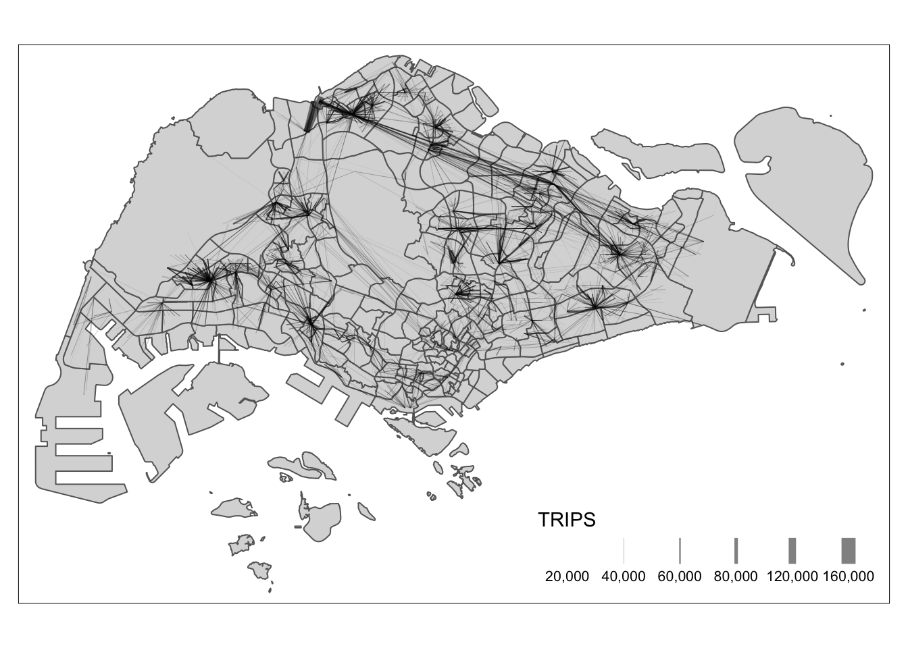
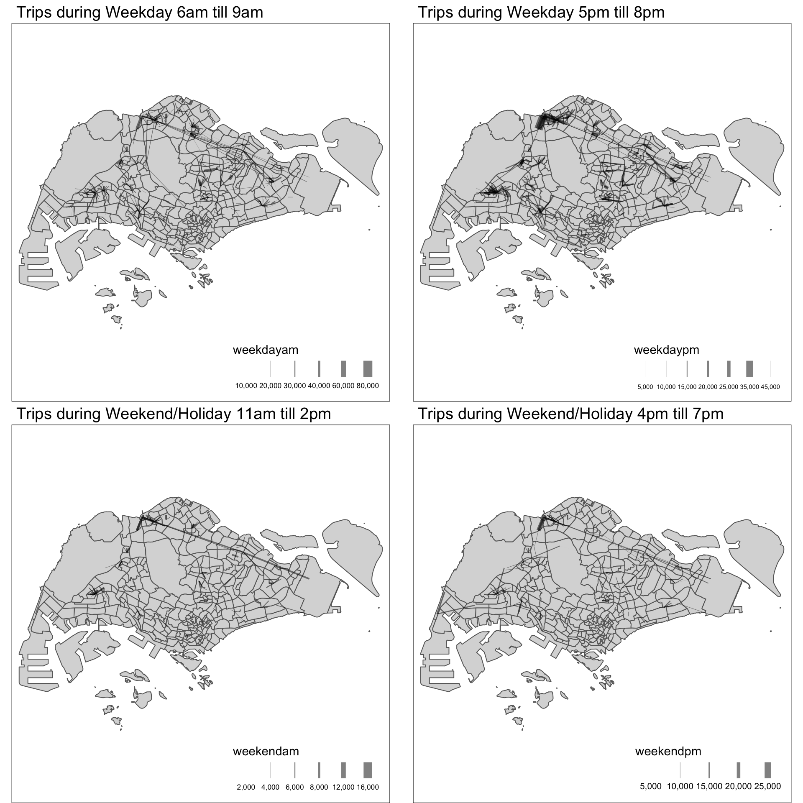

Code
pacman::p_load(sf, sp, spdep, tmap, tidyverse, sfdep, stplanr, reshape2, ggpubr, DT)What are the driving forces behind urban dwellers to weak up early in morning to commute from their home locations to their work places? What are the impact of removing a public bus service on the commuters reside along the corridor of the bus route? These and many other questions related to urban mobility are challenges faced by transport operators and urban managers.
To provide answer to this question, traditionally, commuters survey will be used. However, commuters survey is a very costly, time-consuming and laborous, not to mention that the survey data tend to take a long time to clean and analyse. As a result, it is not unusual, by the time the survey report was ready, most of the information already out-of-date!
As city-wide urban infrastructures such as public buses, mass rapid transits, public utilities and roads become digital, the data sets obtained can be used as a framework for tracking movement patterns through space and time. This is particularly true with the recent trend of massive deployment of pervasive computing technologies such as GPS on the vehicles and SMART cards used by public transport commuters.
Unfortunately, this explosive growth of geospatially-referenced data has far outpaced the planner’s ability to utilize and transform the data into insightful information thus creating an adverse impact on the return on the investment made to collect and manage this data.
This take-home exercise is motivated by two main reasons. Firstly, despite increasing amounts of open data available for public consumption, there has not been significant practice research carried out to show how these disparate data sources can be integrated, analysed, and modelled to support policy making decisions.
Secondly, there is a general lack of practical research to show how geospatial data science and analysis (GDSA) can be used to support decision-making.
Hence, your task for this take-home exercise is to conduct a case study to demonstrate the potential value of GDSA to integrate publicly available data from multiple sources for building a spatial interaction models to determine factors affecting urban mobility patterns of public bus transit.
For the purpose of this assignment, data from several open government sources will be used:
Passenger Volume by Origin Destination Bus Stops, Bus Stop Location, Train Station and Train Station Exit Point, just to name a few of them, from LTA DataMall.
Master Plan 2019 Subzone Boundary, HDB Property Information, School Directory and Information and other relevant data from Data.gov.sg.
Those specially collected data aim to use within this excercise content only, if intend to put in other usage, approach course instructor Dr. Kam Tin Seong and ask for permission first.
For starting, load needing packages.
pacman::p_load(sf, sp, spdep, tmap, tidyverse, sfdep, stplanr, reshape2, ggpubr, DT)Derive an analytical hexagon data of 375m (this distance is the perpendicular distance between the centre of the hexagon and its edges) to represent the traffic analysis zone (TAZ).
First of all, we need to import Bus Stop Location from LTA DataMall.
busstop = st_read(dsn = "./data/geospatial/BusStopLocation_Jul2023",
layer = "BusStop") %>% st_transform(crs = 3414) %>%
distinct(BUS_STOP_N, .keep_all = TRUE)Reading layer `BusStop' from data source
`/Users/SMU/liangyao2023/ISSS624/Takehome_Ex/Takehome_Ex02/data/geospatial/BusStopLocation_Jul2023'
using driver `ESRI Shapefile'
Simple feature collection with 5161 features and 3 fields
Geometry type: POINT
Dimension: XY
Bounding box: xmin: 3970.122 ymin: 26482.1 xmax: 48284.56 ymax: 52983.82
Projected CRS: SVY21Also import subzone geometry data as our background layer.
sz = st_read(dsn = "./data/geospatial",
layer = "MP14_SUBZONE_WEB_PL") %>% st_transform(crs = 3414) Reading layer `MP14_SUBZONE_WEB_PL' from data source
`/Users/SMU/liangyao2023/ISSS624/Takehome_Ex/Takehome_Ex02/data/geospatial'
using driver `ESRI Shapefile'
Simple feature collection with 323 features and 15 fields
Geometry type: MULTIPOLYGON
Dimension: XY
Bounding box: xmin: 2667.538 ymin: 15748.72 xmax: 56396.44 ymax: 50256.33
Projected CRS: SVY21Then we can Derive an analytical hexagon data of 375m.
hexagon <- st_sf(geometry = st_make_grid(busstop, cellsize = c(375,375), what = "polygons",square = FALSE)) %>%
mutate(id = row_number()) %>%
st_transform(crs = 3414) Then we can join bus stop with hexagon, and join with subzone to exclude hexagons out of range.
bus_hex <- st_join(
st_join(hexagon, busstop%>%select(BUS_STOP_N,geometry), join = st_intersects),
sz) %>%
drop_na() %>%
distinct(BUS_STOP_N, .keep_all = TRUE)Check for duplicate geometry.
bus_hex %>%
group_by(geometry)%>%
filter(row_number()>1)With reference to the time intervals provided in the table below, construct an O-D matrix of commuter flows for a time interval of your choice by integrating Passenger Volume by Origin Destination Bus Stops and Bus Stop Location from LTA DataMall. The O-D matrix must be aggregated at the analytics hexagon level
| Peak hour period | Bus tap on time |
|---|---|
| Weekday morning peak | 6am to 9am |
| Weekday afternoon peak | 5pm to 8pm |
| Weekend/holiday morning peak | 11am to 2pm |
| Weekend/holiday evening peak | 4pm to 7pm |
Import bus passenger trips data.
odbus = read_csv("./data/aspatial/origin_destination_bus_202310.csv") %>%
mutate(ORIGIN_PT_CODE = as.factor(ORIGIN_PT_CODE),
DESTINATION_PT_CODE = as.factor(DESTINATION_PT_CODE))Extract passenger trips data during all peak time intervals.
peak_trips <- bind_rows(
odbus %>%
filter(DAY_TYPE == "WEEKDAY") %>%
filter(TIME_PER_HOUR >= 6 &
TIME_PER_HOUR <= 9) %>%
mutate(interval = "weekdayam"),
odbus %>%
filter(DAY_TYPE == "WEEKDAY") %>%
filter(TIME_PER_HOUR >= 17 &
TIME_PER_HOUR <= 20) %>%
mutate(interval = "weekdaypm"),
odbus %>%
filter(DAY_TYPE == "WEEKENDS/HOLIDAY") %>%
filter(TIME_PER_HOUR >= 11 &
TIME_PER_HOUR <= 14) %>%
mutate(interval = "weekendam"),
odbus %>%
filter(DAY_TYPE == "WEEKENDS/HOLIDAY") %>%
filter(TIME_PER_HOUR >= 16 &
TIME_PER_HOUR <= 19) %>%
mutate(interval = "weekendpm")) %>%
group_by(ORIGIN_PT_CODE, DESTINATION_PT_CODE, interval) %>%
reframe(TRIPS = sum(TOTAL_TRIPS))
glimpse(peak_trips)Rows: 951,259
Columns: 4
$ ORIGIN_PT_CODE <fct> 01012, 01012, 01012, 01012, 01012, 01012, 01012, 0…
$ DESTINATION_PT_CODE <fct> 01112, 01112, 01112, 01112, 01113, 01113, 01113, 0…
$ interval <chr> "weekdayam", "weekdaypm", "weekendam", "weekendpm"…
$ TRIPS <dbl> 290, 540, 265, 201, 118, 516, 189, 165, 77, 303, 1…Check any bus stops not in our origin ‘bus_hex’ list.
peak_trips %>%
filter(! ORIGIN_PT_CODE %in% bus_hex$'BUS_STOP_N') %>%
group_by(ORIGIN_PT_CODE) %>%
reframe(TRIPS = sum(TRIPS))Exclude any bus stops not included in ‘bus_hex’ data before continue.
peak_trips <- peak_trips %>%
filter(ORIGIN_PT_CODE %in% bus_hex$'BUS_STOP_N') %>%
filter(DESTINATION_PT_CODE %in% bus_hex$'BUS_STOP_N')Duplication check before continue.
peak_trips %>%
group_by_all() %>%
filter(n()>1) %>%
ungroup()After that, we need to combine those passenger trip data with geospatial data by origin bus stops.
peaktrip_hex <- left_join(peak_trips %>%
group_by(ORIGIN_PT_CODE, DESTINATION_PT_CODE) %>%
reframe(TRIPS = sum(TRIPS)),
bus_hex %>% select(BUS_STOP_N, geometry),
by = c("ORIGIN_PT_CODE" = "BUS_STOP_N")) %>%
rename(ORIGIN_BS = ORIGIN_PT_CODE,
DESTIN_BS = DESTINATION_PT_CODE) Duplication check before continue:
peaktrip_hex %>%
group_by_all() %>%
filter(n()>1) %>%
ungroup()Then we can continue to join again with geospatial data by destination bus stops.
peaktrip_hex <- left_join(peaktrip_hex, bus_hex %>% select(BUS_STOP_N, geometry),
by = c("DESTIN_BS" = "BUS_STOP_N"),
suffix = c(".origin", ".destin")) Duplication check again.
peaktrip_hex %>%
group_by_all() %>%
filter(n()>1) %>%
ungroup()# A tibble: 0 × 5
# ℹ 5 variables: ORIGIN_BS <chr>, DESTIN_BS <chr>, TRIPS <dbl>,
# geometry.origin <GEOMETRY [m]>, geometry.destin <GEOMETRY [m]>We can save the output into a rds file.
write_rds(peaktrip_hex, "./data/rds/peaktrip_hex.rds")Display the O-D flows of the passenger trips by using appropriate geovisualisation methods.
First let’s ensure there aren’t any observations with same origin and destination.
peaktrip_hex %>%
filter(ORIGIN_BS==DESTIN_BS)Then we can create flow lines and check summary of data in case there are any zero.
peaktrip_flow <- od2line(flow = peaktrip_hex,
zones = bus_hex,
zone_code = "BUS_STOP_N")
summary(peaktrip_flow) ORIGIN_BS DESTIN_BS TRIPS
Length:306940 Length:306940 Min. : 1.0
Class :character Class :character 1st Qu.: 6.0
Mode :character Mode :character Median : 27.0
Mean : 209.1
3rd Qu.: 112.0
Max. :153711.0
geometry.origin geometry.destin geometry
POLYGON :306940 POLYGON :306940 LINESTRING :306940
epsg:3414 : 0 epsg:3414 : 0 epsg:3414 : 0
+proj=tmer...: 0 +proj=tmer...: 0 +proj=tmer...: 0
Till now, we can plot out the bus trip flow during all 4 peak time intervals in total.
tm_shape(sz) +
tmap_options(check.and.fix = TRUE) +
tm_polygons() +
peaktrip_flow %>%
filter(TRIPS >= 2000) %>%
tm_shape() +
tm_lines(lwd = "TRIPS",
style = "quantile",
scale = c(0.1, 1, 3, 5, 7, 10),
n = 6,
alpha = 0.5)
And we can visualize 4 peak time intervals in facets style to check any difference within.
First need to wrangling the data to put trips data of different time intervals into different columns.
peak_interval_trips <- peak_trips %>%
pivot_wider(names_from = interval,
values_from = TRIPS,
values_fill = 0)
peak_interval_hex <- left_join(peak_interval_trips,
bus_hex %>% select(BUS_STOP_N, geometry),
by = c("ORIGIN_PT_CODE" = "BUS_STOP_N")) %>%
rename(ORIGIN_BS = ORIGIN_PT_CODE,
DESTIN_BS = DESTINATION_PT_CODE)
peak_interval_hex <- left_join(peak_interval_hex, bus_hex %>% select(BUS_STOP_N, geometry),
by = c("DESTIN_BS" = "BUS_STOP_N"),
suffix = c(".origin", ".destin")) Before we continue, we can check duplication and save the result as a rds file.
peak_interval_hex %>%
group_by_all() %>%
filter(n()>1) %>%
ungroup()write_rds(peak_interval_hex, "./data/rds/peak_interval_hex.rds")Then we can create flow lines.
peak_interval_flow <- od2line(flow = peak_interval_hex,
zones = bus_hex,
zone_code = "BUS_STOP_N")
summary(peak_interval_flow) ORIGIN_BS DESTIN_BS weekdayam weekdaypm
Length:306940 Length:306940 Min. : 0.00 Min. : 0.00
Class :character Class :character 1st Qu.: 1.00 1st Qu.: 1.00
Mode :character Mode :character Median : 6.00 Median : 8.00
Mean : 82.23 Mean : 78.52
3rd Qu.: 37.00 3rd Qu.: 38.00
Max. :74796.00 Max. :42785.00
weekendam weekendpm geometry.origin
Min. : 0.00 Min. : 0.00 POLYGON :306940
1st Qu.: 0.00 1st Qu.: 0.00 epsg:3414 : 0
Median : 3.00 Median : 3.00 +proj=tmer...: 0
Mean : 24.16 Mean : 24.23
3rd Qu.: 12.00 3rd Qu.: 12.00
Max. :15603.00 Max. :23484.00
geometry.destin geometry
POLYGON :306940 LINESTRING :306940
epsg:3414 : 0 epsg:3414 : 0
+proj=tmer...: 0 +proj=tmer...: 0
Then we can plot out 4 peak intervals in facets.
weekdayam_plot <- tm_shape(sz) +
tmap_options(check.and.fix = TRUE) +
tm_polygons() +
peak_interval_flow %>%
filter(weekdayam >= 5000) %>%
tm_shape() +
tm_lines(lwd = "weekdayam",
style = "quantile",
scale = c(0.1, 1, 3, 5, 7, 10),
n = 6,
alpha = 0.5) +
tm_layout(main.title = "Trips during Weekday 6am till 9am",
main.title.size = 1.2)
weekdaypm_plot <- tm_shape(sz) +
tmap_options(check.and.fix = TRUE) +
tm_polygons() +
peak_interval_flow %>%
filter(weekdaypm >= 5000) %>%
tm_shape() +
tm_lines(lwd = "weekdaypm",
style = "quantile",
scale = c(0.1, 1, 3, 5, 7, 10),
n = 6,
alpha = 0.5) +
tm_layout(main.title = "Trips during Weekday 5pm till 8pm",
main.title.size = 1.2)
weekendam_plot <- tm_shape(sz) +
tmap_options(check.and.fix = TRUE) +
tm_polygons() +
peak_interval_flow %>%
filter(weekendam >= 2000) %>%
tm_shape() +
tm_lines(lwd = "weekendam",
style = "quantile",
scale = c(0.1, 1, 3, 5, 7, 10),
n = 6,
alpha = 0.5) +
tm_layout(main.title = "Trips during Weekend/Holiday 11am till 2pm",
main.title.size = 1.2)
weekendpm_plot <- tm_shape(sz) +
tmap_options(check.and.fix = TRUE) +
tm_polygons() +
peak_interval_flow %>%
filter(weekendpm >= 2000) %>%
tm_shape() +
tm_lines(lwd = "weekendpm",
style = "quantile",
scale = c(0.1, 1, 3, 5, 7, 10),
n = 6,
alpha = 0.5) +
tm_layout(main.title = "Trips during Weekend/Holiday 4pm till 7pm",
main.title.size = 1.2)
tmap_arrange(weekdayam_plot, weekdaypm_plot, weekendam_plot, weekendpm_plot, asp=1, ncol=2,
outer.margins = 0)
Observations:
Describe the spatial patterns revealed by the geo-visualization (not more than 100 words per visual)
Firstly import all those propulsive and Attractiveness variables.
business = st_read(dsn = "./data/geospatial",
layer = "Business") %>% st_transform(crs = 3414) Reading layer `Business' from data source
`/Users/SMU/liangyao2023/ISSS624/Takehome_Ex/Takehome_Ex02/data/geospatial'
using driver `ESRI Shapefile'
Simple feature collection with 6550 features and 3 fields
Geometry type: POINT
Dimension: XY
Bounding box: xmin: 3669.148 ymin: 25408.41 xmax: 47034.83 ymax: 50148.54
Projected CRS: SVY21 / Singapore TMentertn = st_read(dsn = "./data/geospatial",
layer = "entertn") %>% st_transform(crs = 3414) Reading layer `entertn' from data source
`/Users/SMU/liangyao2023/ISSS624/Takehome_Ex/Takehome_Ex02/data/geospatial'
using driver `ESRI Shapefile'
Simple feature collection with 114 features and 3 fields
Geometry type: POINT
Dimension: XY
Bounding box: xmin: 10809.34 ymin: 26528.63 xmax: 41600.62 ymax: 46375.77
Projected CRS: SVY21 / Singapore TMfood = st_read(dsn = "./data/geospatial",
layer = "F&B") %>% st_transform(crs = 3414) Reading layer `F&B' from data source
`/Users/SMU/liangyao2023/ISSS624/Takehome_Ex/Takehome_Ex02/data/geospatial'
using driver `ESRI Shapefile'
Simple feature collection with 1919 features and 3 fields
Geometry type: POINT
Dimension: XY
Bounding box: xmin: 6010.495 ymin: 25343.27 xmax: 45462.43 ymax: 48796.21
Projected CRS: SVY21 / Singapore TMfinance = st_read(dsn = "./data/geospatial",
layer = "FinServ") %>% st_transform(crs = 3414) Reading layer `FinServ' from data source
`/Users/SMU/liangyao2023/ISSS624/Takehome_Ex/Takehome_Ex02/data/geospatial'
using driver `ESRI Shapefile'
Simple feature collection with 3320 features and 3 fields
Geometry type: POINT
Dimension: XY
Bounding box: xmin: 4881.527 ymin: 25171.88 xmax: 46526.16 ymax: 49338.02
Projected CRS: SVY21 / Singapore TMleisure = st_read(dsn = "./data/geospatial",
layer = "Leisure&Recreation") %>% st_transform(crs = 3414) Reading layer `Leisure&Recreation' from data source
`/Users/SMU/liangyao2023/ISSS624/Takehome_Ex/Takehome_Ex02/data/geospatial'
using driver `ESRI Shapefile'
Simple feature collection with 1217 features and 30 fields
Geometry type: POINT
Dimension: XY
Bounding box: xmin: 6010.495 ymin: 25134.28 xmax: 48439.77 ymax: 50078.88
Projected CRS: SVY21 / Singapore TMretail = st_read(dsn = "./data/geospatial",
layer = "Retails") %>% st_transform(crs = 3414) Reading layer `Retails' from data source
`/Users/SMU/liangyao2023/ISSS624/Takehome_Ex/Takehome_Ex02/data/geospatial'
using driver `ESRI Shapefile'
Simple feature collection with 37635 features and 3 fields
Geometry type: POINT
Dimension: XY
Bounding box: xmin: 4737.982 ymin: 25171.88 xmax: 48265.04 ymax: 50135.28
Projected CRS: SVY21 / Singapore TMThen we can assemble all those variables by using st_join.
factors <- st_join(retail %>% select(POI_NAME, geometry),
business %>% select(POI_NAME, geometry),
join = st_nearest_feature,
suffix = c("_retail", "_business")) %>%
st_join(finance %>% select(POI_NAME, geometry) %>% rename(finance = POI_NAME),
join = st_nearest_feature) %>%
st_join(food %>% select(POI_NAME, geometry) %>% rename(food = POI_NAME),
join = st_nearest_feature) %>%
st_join(leisure %>% select(POI_NAME, geometry) %>% rename(leisure = POI_NAME),
join = st_nearest_feature) %>%
st_join(entertn %>% select(POI_NAME, geometry) %>% rename(entertn = POI_NAME),
join = st_nearest_feature) %>%
st_join(bus_hex%>%select(BUS_STOP_N, geometry), join = st_nearest_feature)Then we need to count the point of each variable around each bus stop.
factor_count <-
aggregate(POI_NAME_retail ~ BUS_STOP_N, data = factors, function(x) length(unique(x))) %>%
rename(retail_poi = POI_NAME_retail) %>%
left_join(
aggregate(POI_NAME_business ~ BUS_STOP_N, data = factors, function(x) length(unique(x))) %>%
rename(business_poi = POI_NAME_business),
by = join_by(BUS_STOP_N)) %>%
left_join(
aggregate(finance ~ BUS_STOP_N, data = factors, function(x) length(unique(x))) %>%
rename(finance_poi = finance),
by = join_by(BUS_STOP_N)) %>%
left_join(
aggregate(food ~ BUS_STOP_N, data = factors, function(x) length(unique(x))) %>%
rename(food_poi = food),
by = join_by(BUS_STOP_N)) %>%
left_join(
aggregate(leisure ~ BUS_STOP_N, data = factors, function(x) length(unique(x))) %>%
rename(leisure_poi = leisure),
by = join_by(BUS_STOP_N)) %>%
left_join(
aggregate(entertn ~ BUS_STOP_N, data = factors, function(x) length(unique(x))) %>%
rename(entertn_poi = entertn),
by = join_by(BUS_STOP_N)) Check summary of assembled factors before continue.
summary(factor_count) BUS_STOP_N retail_poi business_poi finance_poi
Length:1661 Min. : 1.00 Min. : 1.000 Min. : 1.000
Class :character 1st Qu.: 2.00 1st Qu.: 1.000 1st Qu.: 1.000
Mode :character Median : 5.00 Median : 1.000 Median : 1.000
Mean : 22.12 Mean : 2.198 Mean : 1.745
3rd Qu.: 18.00 3rd Qu.: 2.000 3rd Qu.: 2.000
Max. :889.00 Max. :27.000 Max. :16.000
food_poi leisure_poi entertn_poi
Min. : 1.000 Min. : 1.000 Min. :1.000
1st Qu.: 1.000 1st Qu.: 1.000 1st Qu.:1.000
Median : 1.000 Median : 1.000 Median :1.000
Mean : 1.703 Mean : 1.565 Mean :1.139
3rd Qu.: 2.000 3rd Qu.: 2.000 3rd Qu.:1.000
Max. :37.000 Max. :17.000 Max. :6.000 Since left = TRUE is default in st_join, so here I will join those variables in the sequence of number of observations, which is, retail <- business <- finance <- food <- leisure <- entertain.
And to avoid NA count in some variable, I will set the “join = st_nearest_feature” instead of default “st_intersect”.
First we need to convert the bus_hex we have generated into Spatial Polygons Data Frame.
bus_sp <- as(bus_hex, "Spatial")
bus_spclass : SpatialPolygonsDataFrame
features : 5140
extent : 3595.122, 48595.12, 26265.59, 50081.29 (xmin, xmax, ymin, ymax)
crs : +proj=tmerc +lat_0=1.36666666666667 +lon_0=103.833333333333 +k=1 +x_0=28001.642 +y_0=38744.572 +ellps=WGS84 +towgs84=0,0,0,0,0,0,0 +units=m +no_defs
variables : 17
names : id, BUS_STOP_N, OBJECTID, SUBZONE_NO, SUBZONE_N, SUBZONE_C, CA_IND, PLN_AREA_N, PLN_AREA_C, REGION_N, REGION_C, INC_CRC, FMEL_UPD_D, X_ADDR, Y_ADDR, ...
min values : 3, 01012, 1, 1, ADMIRALTY, AMSZ02, N, ANG MO KIO, AM, CENTRAL REGION, CR, 00F5E30B5C9B7AD8, 16409, 5092.8949, 25813.3546, ...
max values : 9888, 99189, 323, 17, YUNNAN, YSSZ09, Y, YISHUN, YS, WEST REGION, WR, FF2AA0D68743AE28, 16409, 49502.4866, 49482.5953, ... Then we can compute distance matrix of our bus stops hexagons and check the head 5.
dist <- spDists(bus_sp,
longlat = FALSE)
head(dist, n=c(5, 5)) [,1] [,2] [,3] [,4] [,5]
[1,] 0.0000 992.1567 2704.1635 3333.0729 992.1567
[2,] 992.1567 0.0000 1948.5572 2598.0762 375.0000
[3,] 2704.1635 1948.5572 0.0000 649.5191 2281.0359
[4,] 3333.0729 2598.0762 649.5191 0.0000 2928.8436
[5,] 992.1567 375.0000 2281.0359 2928.8436 0.0000Then we can label the bus stops and convert it to pair-distance.
busstop_N <- bus_hex$BUS_STOP_N
colnames(dist) <- paste0(busstop_N)
rownames(dist) <- paste0(busstop_N)
distPair <- melt(dist) %>%
rename(dist = value,
orig = Var1,
dest = Var2) %>%
filter(orig != dest) %>%
mutate(orig = as.character(orig),
dest = as.character(dest))
head(distPair, 10) orig dest dist
1 25751 25059 992.1567
2 26379 25059 2704.1635
3 26369 25059 3333.0729
4 25761 25059 992.1567
5 26389 25059 2459.0394
6 25719 25059 2250.0000
7 25711 25059 2250.0000
8 26299 25059 4056.2452
9 25741 25059 1634.5871
10 25729 25059 2087.9116Let’s give a constant distance of 50m to intra-hexagon bus stops pairs before continue.
distPair$dist <- ifelse(distPair$dist == 0,
50, distPair$dist)
summary(distPair) orig dest dist
Length:26414460 Length:26414460 Min. : 50
Class :character Class :character 1st Qu.: 7803
Mode :character Mode :character Median :12667
Mean :13299
3rd Qu.:17863
Max. :44926 Save the output of pairwise distance as rds file.
write_rds(distPair, "./data/rds/distPair.rds") For this part, I will focus on weekend/holiday evening peak time interval for further analysis.
weekendpm_trips <- odbus %>%
filter(DAY_TYPE == "WEEKENDS/HOLIDAY") %>%
filter(TIME_PER_HOUR >= 16 &
TIME_PER_HOUR <= 19) %>%
group_by(ORIGIN_PT_CODE, DESTINATION_PT_CODE) %>%
reframe(TRIPS = sum(TOTAL_TRIPS))
weekendpm_trips <- weekendpm_trips %>%
filter(ORIGIN_PT_CODE %in% bus_hex$'BUS_STOP_N') %>%
filter(DESTINATION_PT_CODE %in% bus_hex$'BUS_STOP_N')
weekendpm_hex <- left_join(weekendpm_trips,bus_hex %>% select(BUS_STOP_N, geometry),
by = c("ORIGIN_PT_CODE" = "BUS_STOP_N")) %>%
rename(ORIGIN_BS = ORIGIN_PT_CODE,
DESTIN_BS = DESTINATION_PT_CODE)
weekendpm_hex <- left_join(weekendpm_hex, bus_hex %>% select(BUS_STOP_N, geometry),
by = c("DESTIN_BS" = "BUS_STOP_N"),
suffix = c(".origin", ".destin")) Create flow lines for those trips data.
weekendpm_flow <- od2line(flow = weekendpm_hex,
zones = bus_hex,
zone_code = "BUS_STOP_N")
summary(weekendpm_flow) ORIGIN_BS DESTIN_BS TRIPS
Length:218487 Length:218487 Min. : 1.00
Class :character Class :character 1st Qu.: 2.00
Mode :character Mode :character Median : 6.00
Mean : 34.05
3rd Qu.: 21.00
Max. :23484.00
geometry.origin geometry.destin geometry
POLYGON :218487 POLYGON :218487 LINESTRING :218487
epsg:3414 : 0 epsg:3414 : 0 epsg:3414 : 0
+proj=tmer...: 0 +proj=tmer...: 0 +proj=tmer...: 0
To ensure, let’s check any case of origin == destination before continue.
weekendpm_flow %>%
filter(ORIGIN_BS == DESTIN_BS)Simple feature collection with 0 features and 3 fields
Active geometry column: geometry
Bounding box: xmin: NA ymin: NA xmax: NA ymax: NA
Projected CRS: SVY21 / Singapore TM
[1] ORIGIN_BS DESTIN_BS TRIPS geometry.origin
[5] geometry.destin geometry
<0 rows> (or 0-length row.names)Then we can join the flow data with pairwise distance.
weekendpm_flow <- weekendpm_flow %>%
left_join (distPair,
by = c("ORIGIN_BS" = "orig",
"DESTIN_BS" = "dest"))weekendpm_flow %>%
filter(dist != NA)Simple feature collection with 0 features and 4 fields
Active geometry column: geometry
Bounding box: xmin: NA ymin: NA xmax: NA ymax: NA
Projected CRS: SVY21 / Singapore TM
[1] ORIGIN_BS DESTIN_BS TRIPS dist
[5] geometry.origin geometry.destin geometry
<0 rows> (or 0-length row.names)Present the modelling results by using appropriate geovisualization and graphical visualization methods.
Observations: